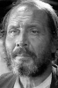

Also known as:Operazione paura (original title)
Country:Italy, 83 minutes
Spoken languages:Italian
Genres:Horror, Mystery, Thriller
Director(s):Mario Bava
Writer(s):Mario Bava, Romano Migliorini, Roberto Natale
Video Codec:Unknown
Number: 934


Certification:
Storyline:
A 20th century European village is haunted by the ghost of a murderous little girl.
Cast: 
Medium: Original DVD,
Loaned: No
Aspect ratio: Unknown